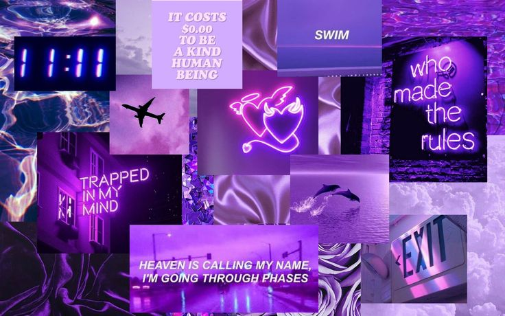
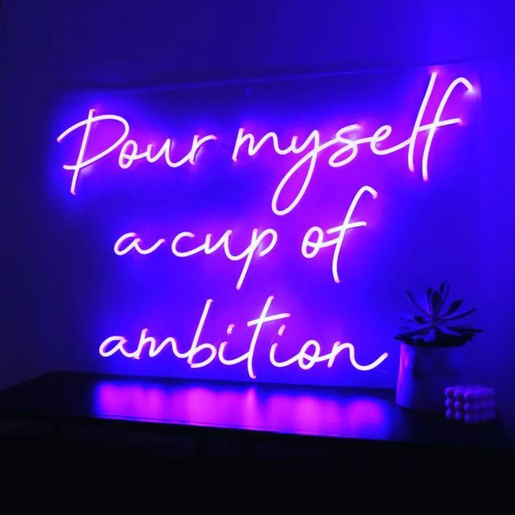

and it opened up my eyes. One of my favorite things to do is to capturethe american nostalgia of signage.
They tell us where we're going or where we've been. They express a mood or saying can even just be a shape.
But it's the vintage, neon, and big light bulbed signs that say so much more. They aren't just your average
square shapes with letters on it. Some actual thought and planning went into the making of the sign. Oh and
the lost are of advertising with nneon signs that display motion is always a fun find! Such a lost art in my
opinion. LED just hurts my eyes.doesn't it?
 Neon at Terrace WallHeart SignDessert Quote on Wall Beautiful Neon ButterflyWelcome Wall

Optimistic Wall